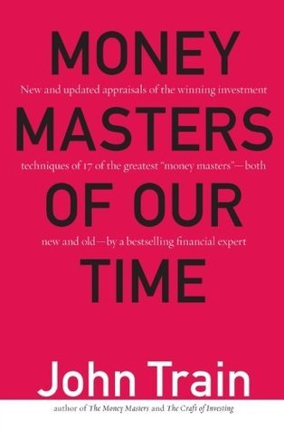

约翰·特雷恩（John Train）是一位兼具华尔街从业背景与文学气质的作家，他在1980年出版了《金钱大师》（The Money Masters），以人物特写的方式记录了九位顶级投资人的思想与方法，成为投资文献中的经典之作。2000年出版的《投资大师》（Money Masters of Our Time）是对前作的全面扩展与更新，将研究对象扩展至十七位投资人，并纳入了此前未被覆盖的乔治·索罗斯、朱利安·罗伯逊、吉姆·罗杰斯、理查德·雷因沃特（Richard Rainwater）等在1980年代之后方才声名大噪的人物。全书的核心价值在于特雷恩的写作方式：他与大多数受访者有过直接的交流，各章内容并非文献综述，而是基于一手访谈和长期观察的人物素描。
书中十七位投资人来自截然不同的投资"流派"——成长股投资（T. 罗·普莱斯、菲利普·费雪）、深度价值（本杰明·格雷厄姆）、低市盈率（约翰·聂夫）、宏观对冲（乔治·索罗斯）、全球价值（约翰·邓普顿）、小盘成长（拉尔夫·旺格）——特雷恩并未强行将这些方法统一到某个框架之下，而是让每位投资人的逻辑自然呈现，由读者自行比较与判断。他对巴菲特的描绘尤为精准：与其说巴菲特是一个"选股者"，不如说他是一个把公司视为有机体而非股票符号来理解的企业分析家，其对资本密集型行业的回避和对高护城河消费品牌的偏爱，在书中都有清晰的论述脉络。
特雷恩笔下的投资人各有缺陷与局限，这是本书区别于许多"成功学"投资读物的重要特征。他直言某些投资人对特定类型的市场依赖过深、某些方法在规模放大后会失效，也指出索罗斯的宏观操作具有极高的认知门槛，普通投资者难以复制。这种不粉饰的视角，使读者得以在崇敬之外保持一份清醒的距离，避免将"学习大师"变成对其策略的机械模仿。全书呈现的隐含信息是：没有一种方法是万能的，但几乎所有成功的投资人都有一个共同点——他们对自己方法的边界有深刻的自知。
《投资大师》的中文版由中国人民大学出版社出版，书名为《投资大师——一本书看清17位投资大师的“手艺”》（ISBN：9787300326153）。对于希望系统了解20世纪投资思想史的读者而言，本书是一个高效的入口：它不是任何单一大师的完整传记，而是一部投资方法的"群像志"。通过横向比较格雷厄姆的量化保守、费雪的定性成长、索罗斯的宏观博弈与邓普顿的全球视野，读者可以建立对投资知识谱系的整体感知，从而更清晰地识别自己的思维倾向与能力边界。